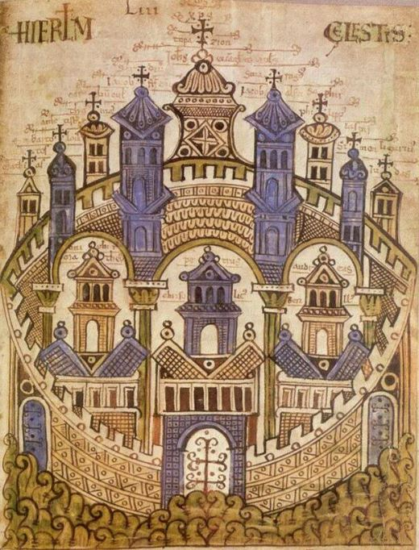

Civitas
Civitas is een project van Marsja Mudde Muziek. Civitas betekent samenleving of stad en verwijst naar de hemelse stad Jeruzalem, de vredesstad met een oogverblindende schoonheid, maar ook naar het aardse Jeruzalem en de vele andere pelgrimssteden in Europa. In deze voorstelling zijn de verhalen van een middeleeuwse en een moderne vrouw, beiden op pelgrimstocht, met elkaar verweven. De middeleeuwse vrouw reist incognito langs belangrijke pelgrimsbestemmingen in heel Europa en verwerkt op die manier het grote verlies van haar echtgenoot en haar zoon. Ze vindt troost in de muziek die ze overal hoort en zingt en in teksten van wijze tijdgenoten, die zij onderweg leest. De moderne vrouw reist haar achterna, eeuwen later, met een fascinatie voor diezelfde muziek en de cultuur waarin deze is ontstaan en ontwikkeld. Haar “heilige graal” is uit te vinden waarom deze muziek zo troostrijk is en in staat is vrede te brengen in een (haar?) verscheurd hart. Vanaf heden te boeken.